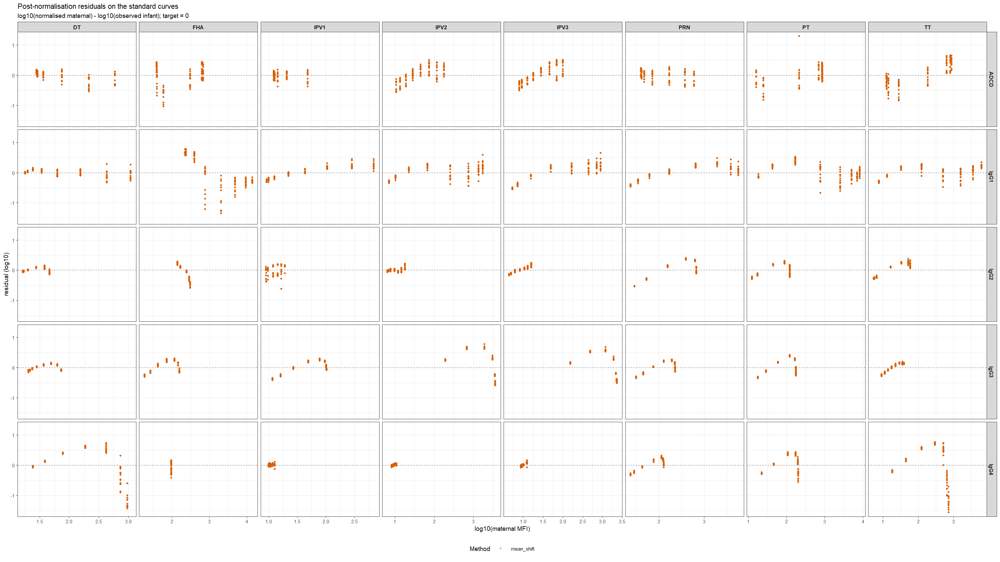
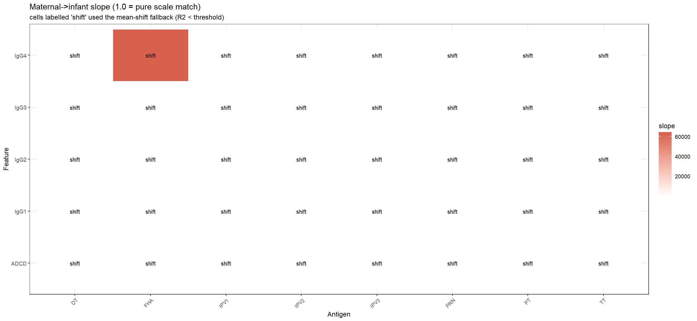
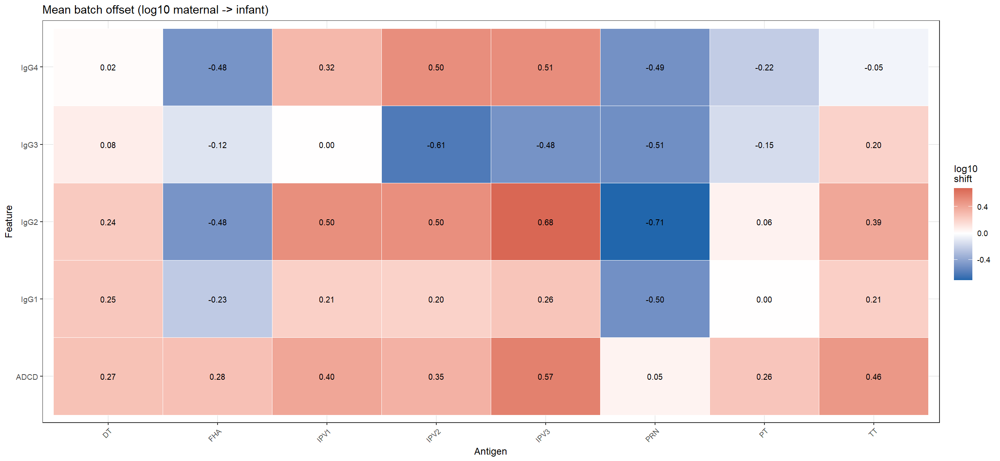

Last updated: 2026-07-16
Checks: 6 1
Knit directory: gaps_system_serology/
This reproducible R Markdown analysis was created with workflowr (version 1.7.2). The Checks tab describes the reproducibility checks that were applied when the results were created. The Past versions tab lists the development history.
The R Markdown file has unstaged changes. To know which version of
the R Markdown file created these results, you’ll want to first commit
it to the Git repo. If you’re still working on the analysis, you can
ignore this warning. When you’re finished, you can run
wflow_publish to commit the R Markdown file and build the
HTML.
Great job! The global environment was empty. Objects defined in the global environment can affect the analysis in your R Markdown file in unknown ways. For reproduciblity it’s best to always run the code in an empty environment.
The command set.seed(1) was run prior to running the
code in the R Markdown file. Setting a seed ensures that any results
that rely on randomness, e.g. subsampling or permutations, are
reproducible.
Great job! Recording the operating system, R version, and package versions is critical for reproducibility.
Nice! There were no cached chunks for this analysis, so you can be confident that you successfully produced the results during this run.
Great job! Using relative paths to the files within your workflowr project makes it easier to run your code on other machines.
Great! You are using Git for version control. Tracking code development and connecting the code version to the results is critical for reproducibility.
The results in this page were generated with repository version 42af270. See the Past versions tab to see a history of the changes made to the R Markdown and HTML files.
Note that you need to be careful to ensure that all relevant files for
the analysis have been committed to Git prior to generating the results
(you can use wflow_publish or
wflow_git_commit). workflowr only checks the R Markdown
file, but you know if there are other scripts or data files that it
depends on. Below is the status of the Git repository when the results
were generated:
Ignored files:
Ignored: .Rproj.user/3BDF2802/bibliography-index/
Ignored: .Rproj.user/3BDF2802/ctx/
Ignored: .Rproj.user/3BDF2802/explorer-cache/
Ignored: .Rproj.user/3BDF2802/jobs/
Ignored: .Rproj.user/3BDF2802/presentation/
Ignored: .Rproj.user/3BDF2802/profiles-cache/
Ignored: .Rproj.user/3BDF2802/sources/per/
Ignored: .Rproj.user/3BDF2802/tutorial/
Ignored: .Rproj.user/3BDF2802/unsaved-notebooks/
Ignored: .Rproj.user/3BDF2802/viewer-cache/
Ignored: .Rproj.user/3BDF2802/viewer_history/
Ignored: .Rproj.user/shared/notebooks/3AC7CCE4-C0_standards_comparison/
Ignored: .Rproj.user/shared/notebooks/92B08E4E-C0_standardise/
Ignored: .Rproj.user/shared/notebooks/D6C8E93B-C0_data_harmonisation/
Ignored: analysis/C2_antibody_chain_files/
Ignored: analysis/C3_responder_phenotype_files/
Ignored: analysis/C4_forward_prediction_files/
Ignored: analysis/C5_concurrent_models_files/
Ignored: analysis/C7_prn_pathway_figure4_files/
Ignored: analysis/C8_subclass_balance_files/
Ignored: analysis/CK_block_ladder_files/
Ignored: parts/
Untracked files:
Untracked: analysis/C0_data_harmonisation_v0.Rmd
Untracked: data/ebaa_extra2_normalised.RData
Untracked: data/ebaa_extra2_plated.RData
Untracked: data/maternal_to_infant_calibration.csv
Untracked: data/smallbaa.RData
Untracked: data/standard_grid_sel.RData
Unstaged changes:
Modified: .Rproj.user/3BDF2802/pcs/debug-breakpoints.pper
Modified: .Rproj.user/3BDF2802/pcs/files-pane.pper
Modified: .Rproj.user/3BDF2802/pcs/find-replace-in-files.pper
Modified: .Rproj.user/3BDF2802/pcs/packages-pane.pper
Modified: .Rproj.user/3BDF2802/pcs/source-pane.pper
Modified: .Rproj.user/3BDF2802/pcs/windowlayoutstate.pper
Modified: .Rproj.user/3BDF2802/pcs/workbench-pane.pper
Modified: .Rproj.user/3BDF2802/sources/prop/1F8932BC
Modified: .Rproj.user/3BDF2802/sources/prop/INDEX
Modified: .Rproj.user/shared/notebooks/paths
Modified: analysis/C0_data_harmonisation.Rmd
Modified: analysis/C1_arm_contrast.Rmd
Modified: analysis/C1_arm_contrast_forest.Rmd
Modified: analysis/C2_antibody_chain.Rmd
Modified: analysis/C3_responder_phenotype.Rmd
Modified: analysis/C4_forward_prediction.Rmd
Modified: analysis/C4_forward_prediction_PTNA.Rmd
Modified: analysis/C4_forward_prediction_SBA.Rmd
Modified: analysis/C4_forward_prediction_WTIgG.Rmd
Modified: analysis/C5_concurrent_models.Rmd
Modified: analysis/C6_responder_in_model.Rmd
Modified: analysis/C7_effector_pathway.Rmd
Modified: analysis/C7_prn_pathway_figure4.Rmd
Modified: analysis/C8_subclass_balance.Rmd
Modified: analysis/CK_block_ladder.Rmd
Modified: analysis/parts/C0_standardise.Rmd
Modified: analysis/parts/C0_standards_comparison.Rmd
Modified: analysis/parts/C1_response_bubbles.Rmd
Modified: analysis/parts/C3_clinical_covariates.Rmd
Staged changes:
New: data/INTERVAL_DAYS_BY_SUBJECT.RData
New: data/S1_data.csv
New: data/c_set.RData
New: data/c_set_w_act_pentamer.RData
New: data/clin_assess.RData
New: data/d_set.RData
New: data/figure3_abc_data.csv
New: data/igg_standard_model_fit_ap_matpm_prevacvacc_k_mat.RData
New: data/igg_standard_model_fit_wp_matpm_prevacvacc_k_mat.RData
New: data/igg_standard_residuals_ap_matpm_prevacvacc_k.RData
New: data/igg_standard_residuals_ap_matpm_prevacvacc_k_mat.RData
New: data/igg_standard_residuals_ap_matpm_prevacvacc_k_trn.RData
New: data/igg_standard_residuals_wp_matpm_prevacvacc_k.RData
New: data/igg_standard_residuals_wp_matpm_prevacvacc_k_mat.RData
New: data/igg_standard_residuals_wp_matpm_prevacvacc_k_trn.RData
New: data/inf_baa.RData
New: data/mat_baa.RData
New: data/mat_baa_norm.RData
New: data/mat_igg1_baa.csv
New: data/mat_igg2_baa.csv
New: data/mat_igg3_baa.csv
New: data/mat_igg4_baa.csv
New: data/normalization_params.csv
New: data/plate_df.RData
New: data/standards_sel.RData
New: data/std_curve_fits.csv
New: data/totalIgG.RData
Note that any generated files, e.g. HTML, png, CSS, etc., are not included in this status report because it is ok for generated content to have uncommitted changes.
These are the previous versions of the repository in which changes were
made to the R Markdown (analysis/C0_data_harmonisation.Rmd)
and HTML (docs/C0_data_harmonisation.html) files. If you’ve
configured a remote Git repository (see ?wflow_git_remote),
click on the hyperlinks in the table below to view the files as they
were in that past version.
| File | Version | Author | Date | Message |
|---|---|---|---|---|
| Rmd | 42af270 | mszens | 2026-07-14 | revised C0 (analysis + config, no data) |
| html | 42af270 | mszens | 2026-07-14 | revised C0 (analysis + config, no data) |
C0 prepares every downstream input for C1–C8/CK from the canonical d_set.RData (ebaa_extra2). Two stages:
Harmonisation — cross-batch MFI normalisation. The maternal /
cord-blood assays (mat_baa) were run ~1 year after the
infant assays (inf_baa), by different staff, on different
plate layouts, using different biosamples. The only
shared reference is the standard: the same composition, run over the
same dilution series in both batches. We therefore normalise
mat_baa onto the inf_baa scale by regressing
the two batches’ standard responses against each other, pooled across
plates, and apply the fitted relationship to the maternal/cord test
samples. IgG standardisation — regressing each functional / subclass
assay on its antigen-specific total IgG; whole-bacterium assays are
standardised against a single chosen antigen (SBA & WT-IgG →
PRN_IgG; PTNA → PT_IgG). All intermediate outputs are written to data/
and are git-ignored.
mat_baa is placed on the inf_baa scale one
feature × antigen at a time, pooled across plates
(plate identity does not carry between the two runs):
log10(dilution) is the shared x-axis.
At each dilution we pair the observed infant MFI with
the maternal MFI read off the maternal predicted
standard-curve grid (linearly interpolated; each grid curve is first
mapped back onto the dilution axis using its own observed range).log10(inf_MFI) ~ log10(mat_MFI). If
R² ≥ R2_MIN the fitted line is the
concentration-dependent normalisation. If
R² < R2_MIN (a near-flat, low-signal standard where the
slope is ill-determined) we fall back to a constant
mean-shift —
log10(norm) = log10(raw) + mean(log10_inf − log10_mat) —
i.e. a slope-1, batch-offset correction for that feature × antigen.sample_type M, C)
mbaa test samples. Infant (B) samples are the
reference scale and are left unchanged. Everything stays in MFI space —
nothing is expressed in concentration units.The exported maternal_to_infant_calibration.csv (written
to data/) carries the per feature × antigen coefficients
and the method used, and can be joined to any sample frame to reproduce
the normalisation.
mat_baa antigens carry a batch-code suffix
(e.g. pt_42). The base name (antigen_base) is
the cross-set join key throughout.
The sigmoid standard-curve grid exists for a subset of features and antigens; normalisation is only defined where the grid and both observed sets overlap.
At every shared dilution the observed infant MFI is paired with the pooled maternal grid MFI, producing the regression training set for each feature × antigen.
Feature x antigen with a paired reference : 40Paired standard points (total) : 102300log10(inf_MFI) ~ f(log10(mat_MFI)) is fitted per feature
× antigen (pooled across plates). With
CALIB_METHOD = "spline" the mapping is a monotone-
increasing constrained smoother (cgam::s.incr),
which is shape-free but order-preserving. Low-signal or point-poor
standards fall back to a constant mean-shift.
CALIB_METHOD = "linear" restores the legacy regression /
mean-shift behaviour (R² ≥ 0.5).
Calibration method : splineCalibrations built : 40 monotone spline : 0 linear regression : 0 mean-shift fallback : 40The calibration is applied to maternal/cord mbaa rows by
monotone interpolation against the fitted lookup grid;
infant (B) rows are the reference scale and pass through
unchanged. rule = 2 clamps predictions at the fitted
support ends, and out_of_range still flags any raw MFI
beyond [mat_lo, mat_hi] for downstream censoring.
Rows normalised (maternal/cord mbaa): 39547
Out-of-range (flagged) among normalised: 19100 (48.3%)Applying each calibration back to its own maternal standard points should recover the infant standard response (residual ≈ 0 in log10 space).



Two calibration artefacts are written to data/
(git-ignored): a human-readable per feature × antigen
summary (method + linear diagnostics + support), and a
long-format lookup grid that reproduces the (possibly
nonlinear) mapping by monotone interpolation — the same mechanism used
in §4.
maternal_to_infant_calibration.csv : 40 rows -> data/maternal_to_infant_calibration_grid.csv : 8000 rows -> data/ebaa_extra2_normalised.RData : 127743 rows -> data/| Observation | Meaning | Action |
|---|---|---|
method = regression, slope ≈ 1 |
Batches differ by a near-constant scale | Use as-is |
method = regression, slope ≠ 1 |
Correction depends on MFI level (concentration-dependent) | Use as-is |
method = mean_shift |
Standard too flat/low-signal to fit a slope; constant offset applied | Treat those analytes cautiously |
| Residuals in §5 centred on 0 | Calibration recovers the infant scale | Proceed |
out_of_range = TRUE |
Sample MFI beyond the standard range (extrapolated) | Flag/censor downstream as needed |
Core formula (apply to any maternal/cord sample MFI):
# regression: log10(norm_MFI) = intercept + slope * log10(raw_MFI)
# mean_shift: log10(norm_MFI) = log10(raw_MFI) + shift
# join maternal_to_infant_calibration.csv by (feature/analyte, antigen)Use log10_mfi_infantscale (or
mfi_infantscale) as the analysis-ready, batch-harmonised
value: normalised for maternal/cord, observed for infant.
Standardisation refit gated off
(run_standardisation <- FALSE). Residual files in
data/ are used as-is by C1/C4/C5/C7.
R version 4.5.1 (2025-06-13 ucrt)
Platform: x86_64-w64-mingw32/x64
Running under: Windows 11 x64 (build 26100)
Matrix products: default
LAPACK version 3.12.1
locale:
[1] LC_COLLATE=English_United States.utf8
[2] LC_CTYPE=English_United States.utf8
[3] LC_MONETARY=English_United States.utf8
[4] LC_NUMERIC=C
[5] LC_TIME=English_United States.utf8
time zone: America/New_York
tzcode source: internal
attached base packages:
[1] stats graphics grDevices utils datasets methods base
other attached packages:
[1] RColorBrewer_1.1-3 scales_1.4.0 kableExtra_1.4.0 DT_0.34.0
[5] MASS_7.3-65 cgam_1.32 coneproj_1.23 lubridate_1.9.5
[9] forcats_1.0.1 stringr_1.6.0 dplyr_1.2.1 purrr_1.2.2
[13] readr_2.2.0 tidyr_1.3.2 tibble_3.3.1 ggplot2_4.0.3
[17] tidyverse_2.0.0 here_1.0.2
loaded via a namespace (and not attached):
[1] tidyselect_1.2.1 viridisLite_0.4.3 farver_2.1.2 S7_0.2.2
[5] fastmap_1.2.0 promises_1.5.0 digest_0.6.39 timechange_0.4.0
[9] lifecycle_1.0.5 statmod_1.5.1 magrittr_2.0.5 compiler_4.5.1
[13] rlang_1.2.0 sass_0.4.10 tools_4.5.1 yaml_2.3.12
[17] knitr_1.51 labeling_0.4.3 htmlwidgets_1.6.4 xml2_1.5.2
[21] workflowr_1.7.2 withr_3.0.2 svDialogs_1.1.2 grid_4.5.1
[25] git2r_0.36.2 zeallot_0.2.0 cli_3.6.6 rmarkdown_2.31
[29] reformulas_0.4.4 generics_0.1.4 otel_0.2.0 rstudioapi_0.18.0
[33] tzdb_0.5.0 minqa_1.2.8 cachem_1.1.0 splines_4.5.1
[37] parallel_4.5.1 vctrs_0.7.3 boot_1.3-31 Matrix_1.7-3
[41] jsonlite_2.0.0 hms_1.1.4 systemfonts_1.3.2 crosstalk_1.2.2
[45] jquerylib_0.1.4 svGUI_1.0.2 glue_1.8.1 nloptr_2.2.1
[49] codetools_0.2-20 stringi_1.8.7 gtable_0.3.6 later_1.4.8
[53] quadprog_1.5-8 lme4_2.0-1 pillar_1.11.1 splines2_0.5.4
[57] htmltools_0.5.9 R6_2.6.1 textshaping_1.0.5 Rdpack_2.6.6
[61] rprojroot_2.1.1 evaluate_1.0.5 lattice_0.22-7 rbibutils_2.4.1
[65] httpuv_1.6.16 bslib_0.11.0 Rcpp_1.1.1-1.1 svglite_2.2.2
[69] nlme_3.1-168 whisker_0.4.1 xfun_0.57 fs_2.1.0
[73] pkgconfig_2.0.3